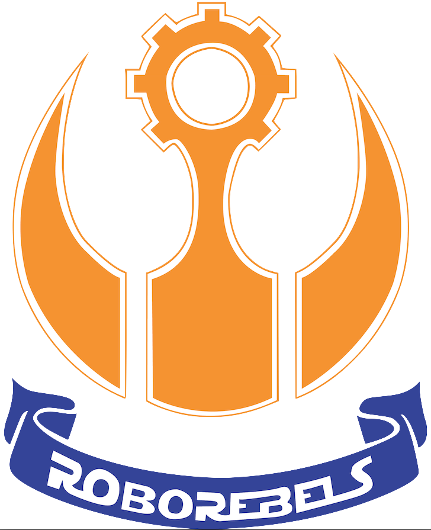
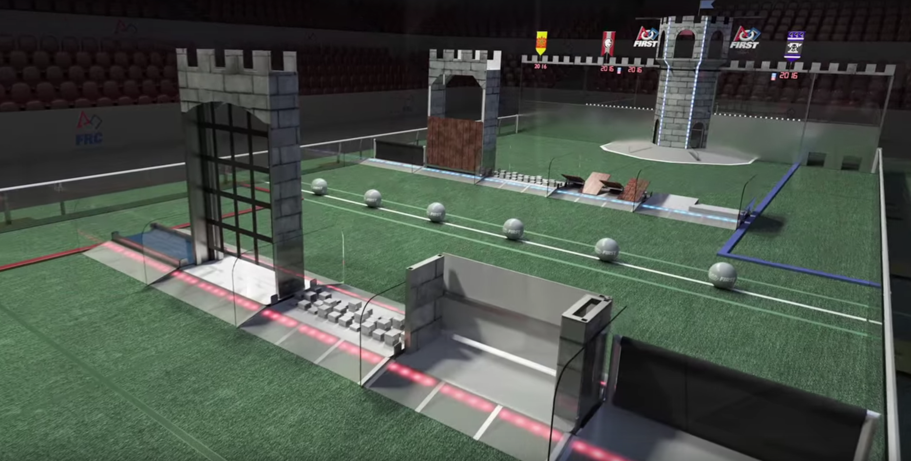

Viz-Priory Boeing RoboRebels
2015-2016 Season:
Our 2015-2016 robot is a tank both with a rugged design and with custom-made tank belts.
It is driven by four CIM motors with high torque single speed gearboxes.
It also has a boulder intake system with high grip treads and two mini CIM motors.
We can cross most defenses and shoot our boulder into the high or low goal.
- Launcher: Two mini-CIM-motors, which can rotate the intake system. Also, the camera
on the tank helps the driver position the shooter towards the high or low goal.
- Design: A rugged look which makes it look good and can withstand a considerable amount
of damage.
- Drive system: Custom made self-centering tank treads from Brecoflex driven by four CIM
motors with high torque gearboxes.
